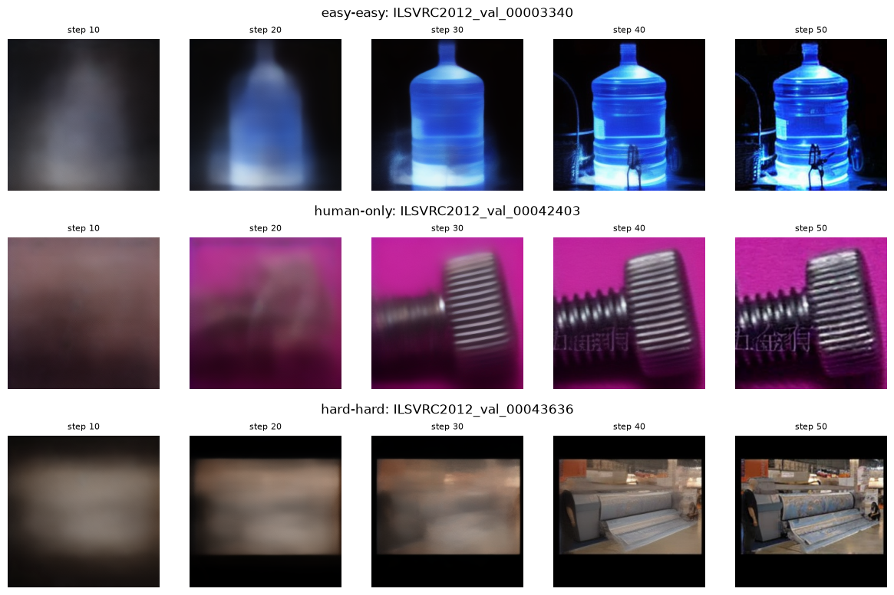
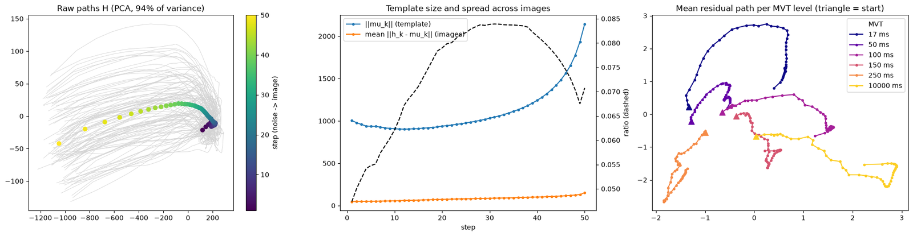
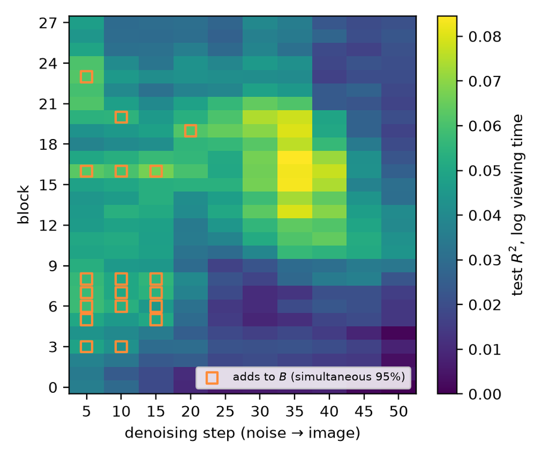
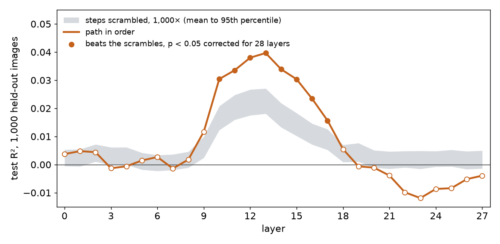

AIMS South Africa · Computer Vision, with an Eye Toward Human Perception · November 2026
Does a Diffusion Model’s Path Show Which Images Are Hard to See?
People name some photos after a 17 ms flash and need 10 seconds for others. A diffusion model rebuilds an image in steps. I asked whether the path its internal states take during that rebuild carries how hard the image is for people — on images the analysis never saw, and beyond what the model’s own confidence already says.
Report (PDF, 4 pages) Code available on request
Context
Mayo et al. measured, for thousands of ImageNet photos, the minimum viewing time: the shortest flash at which most people name the object, from 17 ms to 10 s. It is a difficulty score made by people. In the brain, hard images take extra processing steps; images that feedforward networks fail on take the inferior temporal cortex about 30 ms longer to solve (Kar et al. 2019). A diffusion model also computes in steps, so its internal path is a natural place to look for the same signal.

Before this project I reproduced The Shape of Reasoning, which links the topology of a language model’s reasoning to its quality. The fit on the paper’s own problems was close to the published one, but on held-out problems it was negative in all 54 settings I tried. So this study was built around held-out data, a baseline to beat, chance levels from shuffled labels, and a correction for every layer and step tried.
Approach
From photo to path
Each image is encoded by the VAE, inverted to noise with deterministic DDIM over 50 steps (each step refined three times by fixed-point iteration, reconstruction error 0.039), and rebuilt. While it rebuilds, the output of every one of the 28 blocks is recorded at every step, averaged over the 256 image patches: 1,152 numbers. All paths share one dominant arc, so for every block and step the average of 200 reference images is subtracted.

What is measured
- Snapshot: one block at one step, reduced to 20 principal components, fed to a linear model — for all 28 blocks × 10 steps (280 cells).
- Path in order: one block over all 50 steps — speed, turning angle, curvature, recurrence, settling step. Scrambling the steps changes them.
- Path as a cloud: Vietoris–Rips persistence of the same 50 points, which ignores the order.
- Baseline B: what the models give for free — ResNet-50 confidence, the class effect, the noise-prediction size and the reconstruction error.
How a result is judged
The images were split once before any analysis: 1,029 for development, 1,000 locked away for testing, 200 for the template. Every model is fitted on the development images and scored once on the test images. With 280 snapshots and 28 blocks tried, a result must beat the best of all tries on shuffled labels (a max-statistic correction), and a gain over B must hold with intervals widened for all tries.
Three questions, three answers
1 · Does the model’s inside predict human difficulty on new images? Yes.
All 280 snapshots predict log viewing time on the 1,000 test images after the correction (global p = 0.001). The effect is small — the best is R² 0.085 at block 17, step 35 — partly because the human score has only six coarse levels.

2 · Is it more than the model’s confidence? Partly.
Confidence is a strong baseline. Nothing beats it on its own: the best snapshot is level with it, and the path in order alone reaches about half of it. Most of B comes from the diffusion model itself rather than the outside classifier. But snapshots taken early in the rebuild, when the image is still mostly noise, add something confidence misses: about 20 of the 280, all at steps 5–20.
| Inputs (fitted on development, scored on test) | Test R² |
|---|---|
| ResNet-50 confidence alone | 0.039 |
| DiT’s own three numbers | 0.055 |
| B, all four | 0.079 |
| Best path in order, alone | 0.040 |
| Best snapshot, alone | 0.085 |
| B + one early snapshot | 0.115–0.138 |
3 · Does the order of the steps matter? Yes, in the middle layers.
The path features are fitted on the development images; then the 50 steps of every image are scrambled into its own random order, 1,000 times, refitting each time. On the test images the real order beats every scramble in blocks 10–17, after correcting for all 28 blocks (block 14: 0.034 in order against 0.013 scrambled). Order-blind topology cannot see this: no path has a single loop, so the cloud only records how spread out a path is.

Limitations
- The path is a different signal, not a better one. It never beats the confidence baseline alone, and adding the path in order to the baseline, marginal on the development images, did not hold on the test images.
- The effects are small: test R² at most 0.085 alone and 0.138 with the baseline.
- The model is told the true class while it inverts and rebuilds, and so is the baseline. This is a scientific finding, not yet a tool; a label-free extraction is the next run.
- One model, and a correlation rather than a mechanism.
What it means
Photos people need longer to see also take a longer, more winding path inside the model, and the order of that path carries information about their difficulty. Next: the same test without telling the model the class, a second model, and order-aware topology of the path itself.